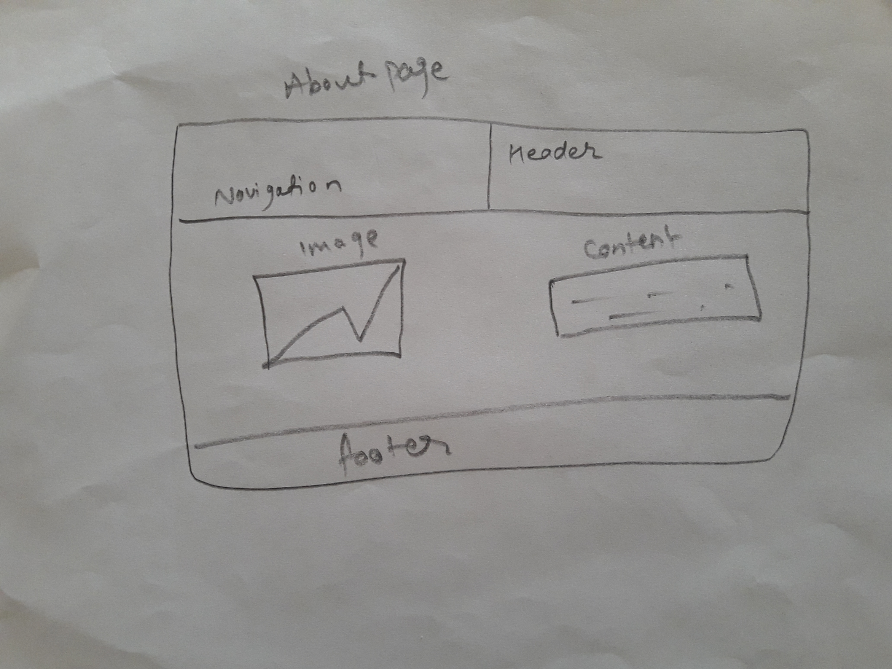

Content
Introduction
Wireframe
Validation
Sketch
Screenshot of My pages
Introduction: As we were handed the assigment on creating the professional website as by instruction instructed by our module_tutor.I have created the website using all the criteria that has been instructed.i had been through differnt webpage and viewed video from the beginners tutorials and tried to create the webpage using the properties.As from 12 weeks we were learning the Html and css using the different properties .
Wireframe: Wireframe is mainly the skeletal framework of the website. Wireframe is degin tool wihich is used to develop the web.It is business analysis,information architecture ,interaction designer,programmer,product manager.
Wireframe of Home pages
As I want to create the creative and simple webpage using th diffrent instruction . I have created mine home page by using the navigation bar at the header of the webpage in the selection part I have put Image and content. Like wise, footer bar at the ending point of webpage.
Wireframe of About me page
Wireframe of CV
Wireframe of Social
Wireframe of Contact
Sketch: Sketch is draw with help of pencil,scale,etc. It is an rough website which draw free hand.
Sketch of Home
Sketch of About

Sketch of CV
Sketch of Social
Sketch of Contact
Validation: I have tested my website with help of W3 school validtor. validation check wherther the website code is right or wrong.
Validation of Home
Validation of About
Validation of CV
Validation of Social
Validation of Contact
Validation of CSS
Screenshot of home
Screenshot of about

Screenshot of cv

Screeenshot of social
Screenshot of contact
Conclusion:
Refernce:
https://www.w3schools.com/
https://www.w3schools.com/cssref/pr_font_font-size.asp
https://www.google.com/search?q=batman+wallpaper&client=firefox-b-ab&source=lnms&tbm=isch&sa=X&ved=0ahUKEwjT-bKdv87aAhWMfLwKHfSxAE8Q_AUICigB#imgrc=PVVZF04M3MT3iM: